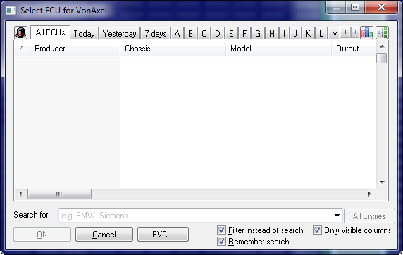
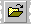

|
The dialog Open (Menu Project) |

  
|
|
The dialog Open (Menu Project) |
|

This dialog allows you to search, manage and open projects. It lists all files in the current project folder.
Clients:
You may use the hat icon in the upper left corner to change the current client and thus folder. Furthermore you may choose to display the data from all local clients at the same time.
The client menu also allows you to view the data from resellers. You can see and purchase their projects directly from this dialog. This function requires an internet-connection.
Filter tabs:
Use the tabs on the top of the dialog to choose if the want to see all projects, projects that were changed today or projects where the producer begins with a certain letter. You may also activate the letters with the hotkey Ctrl+A to Ctrl+Z. To select which tabs you want, click on the tabs using the right mouse button.
Tab 'Purchased / Limited':
This tab only displays projects that you have purchased from resellers or for which the rights have been limited. For technical reasons, the 'Purchased' state can only be saved in ols files since Q2/2018. Therefore, it is determined at the same time whether the rights for the project are limited (which is often the case with purchased projects) also taken into account.
Colors / formats:
The following colors are used (per line) in the list:
| · | Blue: This project file is currently locked (might be in use in WinOLS on another computer) |
| · | Red: This project is currently opened on this computer. |
| · | Green: You already purchased this reseller project. (For reseller lists and own projects purchased from Q2/2018 onwards.) |
| · | Cyan: The rights of these projects are limited. (Only for your own clients.) |
| · | Bold: When using the function "Search similar projects", the columns "ECU-Nr. ECU" and "Software" are printed bold if they match the current project. |
Sidebars:
Using the 3 icons at the top right corner of the dialog you can:
| · | Statistics about during which time period how many projects were created/modified. This data refers to the current selection or (if there is none) to all projects of the active client. |
| · | View statistics about the files in the current view. If you select 2 or more projects, then the statistics will be calculated about the selection. You can use searching and sorting in combination with this feature. |
| · | View the versions in the selected project to make it easier to choose the right project. If you double-click a version, WinOLS will open it directly (without displaying the Open Version dialog). |
Search function:
u Video |
You may also simply type into the list to just to the next entry which begins with the letters that you enter. The letters that you enter will appear in the combobox at the bottom. If you activate "filter instead of search", the project list will show only projects that match your search string.
| · | -Negative: Type a minus sign in front of a word to exclude all projects that contain this word from the results. |
| · | "exact words": Put words in quotation marks to search for projects that contain these words in exactly this order (and not just the individual words). |
| · | "one, ortheother": Separating words with a comma (or the word "or") means that it's okay if only one item in this group is found. |
Context menus:
The tabs and calendar headers have their own context menu that can be accessed by right-clicking them to change configuration settings. By right-clicking one or multiple projects you can access another context menu. Here you have options to edit, move, or send by e-mail, to export the list as text or perform a mass export of the files.
Note:
It's possible that only some of your files are displayed and the title bar of the window contains the text ’Only finished projects’. If this is the case, then you’ve activated the non-developer-mode. As a consequence you can only see / open finished projects and you cannot change them. To reactivate the developer mode, open the configuration menu, go to the page ’Miscellaneous’ and uncheck the ’Non-Developer Mode’.
Shortcuts:
Symbol bar: 
Keyboard: Ctrl+O